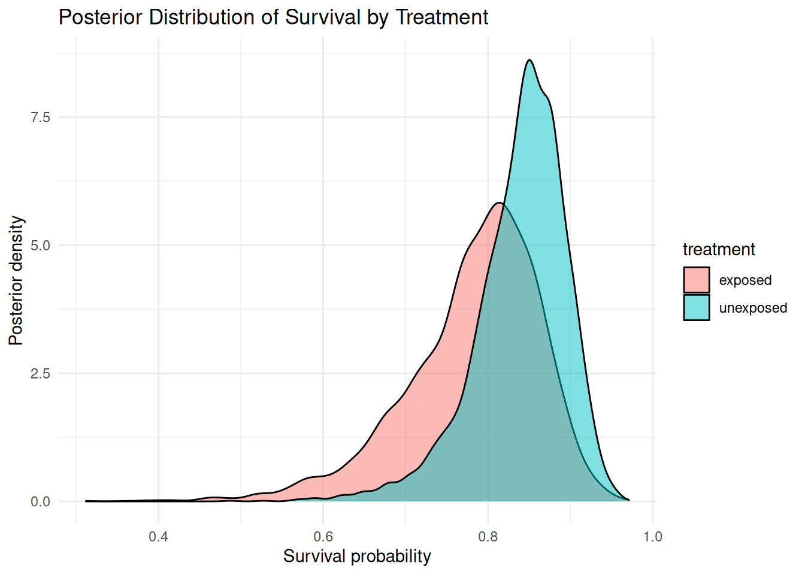

if (!require(librarian)){
install.packages("librarian")
library(librarian)
}Loading required package: librarianlibrarian::shelf(cmdstanr, mrmr, readr, here, posterior, tidyverse, reshape2, abind)if (!require(librarian)){
install.packages("librarian")
library(librarian)
}Loading required package: librarianlibrarian::shelf(cmdstanr, mrmr, readr, here, posterior, tidyverse, reshape2, abind)library(posterior)
library(dplyr)
model_22008 <- read_rds(here("out", "model", "22008_model_2groups.rds"))
class(model_22008)[1] "list"str(model_22008)List of 2
$ m_fit:Classes 'CmdStanMCMC', 'CmdStanFit', 'R6' <CmdStanMCMC>
Inherits from: <CmdStanFit>
Public:
clone: function (deep = FALSE)
cmdstan_diagnose: function ()
cmdstan_summary: function (flags = NULL)
code: function ()
config_files: function (include_failed = FALSE)
constrain_variables: function (unconstrained_variables, transformed_parameters = TRUE,
data_file: function ()
diagnostic_summary: function (diagnostics = c("divergences", "treedepth", "ebfmi"),
draws: function (variables = NULL, inc_warmup = FALSE, format = getOption("cmdstanr_draws_format",
expose_functions: function (global = FALSE, verbose = FALSE)
functions: environment
grad_log_prob: function (unconstrained_variables, jacobian = TRUE, jacobian_adjustment = NULL)
hessian: function (unconstrained_variables, jacobian = TRUE, jacobian_adjustment = NULL)
init: function ()
init_model_methods: function (seed = 1, verbose = FALSE, hessian = FALSE)
initialize: function (runset)
inv_metric: function (matrix = TRUE)
latent_dynamics_files: function (include_failed = FALSE)
log_prob: function (unconstrained_variables, jacobian = TRUE, jacobian_adjustment = NULL)
loo: function (variables = "log_lik", r_eff = TRUE, moment_match = FALSE,
lp: function ()
metadata: function ()
metric_files: function (include_failed = FALSE)
num_chains: function ()
num_procs: function ()
output: function (id = NULL)
output_files: function (include_failed = FALSE)
print: function (variables = NULL, ..., digits = 2, max_rows = getOption("cmdstanr_max_rows",
profile_files: function (include_failed = FALSE)
profiles: function ()
return_codes: function ()
runset: CmdStanRun, R6
sampler_diagnostics: function (inc_warmup = FALSE, format = getOption("cmdstanr_draws_format",
save_config_files: function (dir = ".", basename = NULL, timestamp = TRUE, random = TRUE)
save_data_file: function (dir = ".", basename = NULL, timestamp = TRUE, random = TRUE)
save_latent_dynamics_files: function (dir = ".", basename = NULL, timestamp = TRUE, random = TRUE)
save_metric_files: function (dir = ".", basename = NULL, timestamp = TRUE, random = TRUE)
save_object: function (file, ...)
save_output_files: function (dir = ".", basename = NULL, timestamp = TRUE, random = TRUE)
save_profile_files: function (dir = ".", basename = NULL, timestamp = TRUE, random = TRUE)
summary: function (variables = NULL, ...)
time: function ()
unconstrain_draws: function (files = NULL, draws = NULL, format = getOption("cmdstanr_draws_format",
unconstrain_variables: function (variables)
variable_skeleton: function (transformed_parameters = TRUE, generated_quantities = TRUE)
Private:
draws_: -618.28656 -613.29205 -613.0569 -613.45991 -616.48679 -6 ...
init_: NULL
inv_metric_: list
metadata_: list
model_methods_env_: environment
profiles_: list
read_csv_: function (variables = NULL, sampler_diagnostics = NULL, format = getOption("cmdstanr_draws_format",
return_codes_: 0 0 0 0
sampler_diagnostics_: 4 4 4 4 4 4 4 4 4 4 4 4 4 4 4 4 4 4 4 4 4 4 4 4 4 4 4 4 ...
warmup_draws_: NULL
warmup_sampler_diagnostics_: NULL
$ data :List of 6
..$ stan_d :List of 19
.. ..$ M : num 180
.. ..$ T : num 15
.. ..$ maxJ : num 7
.. ..$ J : Named num [1:15] 0 7 0 6 4 3 3 0 3 3 ...
.. .. ..- attr(*, "names")= chr [1:15] "n_sec_periods1" "n_sec_periods2" "n_sec_periods3" "n_sec_periods4" ...
.. ..$ Jtot : num 42
.. ..$ Y : num [1:180, 1:15, 1:7] 0 0 0 0 0 0 0 0 0 0 ...
.. .. ..- attr(*, "dimnames")=List of 3
.. .. .. ..$ : chr [1:180] "900067000089509" "900067000089512" "900067000089520" "900067000089522" ...
.. .. .. ..$ : chr [1:15] "1" "2" "3" "4" ...
.. .. .. ..$ : chr [1:7] "1" "2" "3" "4" ...
.. ..$ introduced : logi [1:180] TRUE TRUE TRUE TRUE TRUE TRUE ...
.. ..$ t_intro : num [1:180] 3 3 3 3 3 8 8 8 3 8 ...
.. ..$ removed : logi [1:180] FALSE FALSE FALSE FALSE FALSE FALSE ...
.. ..$ t_remove : num [1:180] 0 0 0 0 0 0 0 0 0 0 ...
.. ..$ X_detect : num [1:42, 1] 1 1 1 1 1 1 1 1 1 1 ...
.. .. ..- attr(*, "dimnames")=List of 2
.. .. .. ..$ : chr [1:42] "1" "2" "3" "4" ...
.. .. .. ..$ : chr "(Intercept)"
.. .. ..- attr(*, "assign")= int 0
.. ..$ m_detect : int 1
.. ..$ j_idx : num [1:15, 1:7] 0 1 0 8 14 18 21 0 24 27 ...
.. .. ..- attr(*, "dimnames")=List of 2
.. .. .. ..$ : chr [1:15] "1" "2" "3" "4" ...
.. .. .. ..$ : chr [1:7] "1" "2" "3" "4" ...
.. ..$ any_surveys : Named num [1:15] 0 1 0 1 1 1 1 0 1 1 ...
.. .. ..- attr(*, "names")= chr [1:15] "n_sec_periods1" "n_sec_periods2" "n_sec_periods3" "n_sec_periods4" ...
.. ..$ prim_idx : int [1:42] 2 2 2 2 2 2 2 4 4 4 ...
.. ..$ m_surv : int 2
.. ..$ X_surv : num [1:180, 1:2] 1 1 1 1 1 1 1 1 1 1 ...
.. .. ..- attr(*, "dimnames")=List of 2
.. .. .. ..$ : chr [1:180] "1" "2" "3" "4" ...
.. .. .. ..$ : chr [1:2] "(Intercept)" "treatmentunexposed"
.. .. ..- attr(*, "assign")= int [1:2] 0 1
.. .. ..- attr(*, "contrasts")=List of 1
.. .. .. ..$ treatment: chr "contr.treatment"
.. ..$ any_recruitment: num 0
.. ..$ grainsize : num 1
..$ captures : spc_tbl_ [243 × 4] (S3: spec_tbl_df/tbl_df/tbl/data.frame)
.. ..$ site_id : num [1:243] 22008 22008 22008 22008 22008 ...
.. ..$ survey_date: Date[1:243], format: "2016-07-19" "2016-07-21" ...
.. ..$ pit_tag_id : chr [1:243] "900067000089683" "900067000089652" "900067000089683" "900067000089755" ...
.. ..$ treatment : chr [1:243] "exposed" "exposed" "exposed" "unexposed" ...
.. ..- attr(*, "spec")=
.. .. .. cols(
.. .. .. site_id = col_double(),
.. .. .. survey_date = col_date(format = ""),
.. .. .. pit_tag_id = col_double(),
.. .. .. treatment = col_character()
.. .. .. )
.. ..- attr(*, "problems")=<externalptr>
..$ translocations : tibble [60 × 10] (S3: tbl_df/tbl/data.frame)
.. ..$ site_id : num [1:60] 22008 22008 22008 22008 22008 ...
.. ..$ type : chr [1:60] "reintroduction" "reintroduction" "reintroduction" "reintroduction" ...
.. ..$ release_date : Date[1:60], format: "2016-07-18" "2016-07-18" ...
.. ..$ pit_tag_id : chr [1:60] "900067000089509" "900067000089512" "900067000089520" "900067000089522" ...
.. ..$ treatment : chr [1:60] "unexposed" "exposed" "unexposed" "exposed" ...
.. ..$ survey_date : Date[1:60], format: "2016-07-18" "2016-07-18" ...
.. ..$ primary_period : num [1:60] 3 3 3 3 3 3 3 3 3 3 ...
.. ..$ secondary_period: num [1:60] 0 0 0 0 0 0 0 0 0 0 ...
.. ..$ year : num [1:60] 2016 2016 2016 2016 2016 ...
.. ..$ is_overwinter : logi [1:60] FALSE FALSE FALSE FALSE FALSE FALSE ...
..$ surveys : tibble [45 × 5] (S3: tbl_df/tbl/data.frame)
.. ..$ primary_period : num [1:45] 1 2 2 2 2 2 2 2 3 4 ...
.. ..$ secondary_period: num [1:45] 0 1 2 3 4 5 6 7 0 1 ...
.. ..$ survey_date : Date[1:45], format: "2016-06-07" "2016-06-21" ...
.. ..$ year : num [1:45] 2016 2016 2016 2016 2016 ...
.. ..$ is_overwinter : logi [1:45] FALSE FALSE FALSE FALSE FALSE FALSE ...
..$ removals : logi NA
..$ survival_covariate_df: tibble [180 × 2] (S3: tbl_df/tbl/data.frame)
.. ..$ pit_tag_id: chr [1:180] "900067000089509" "900067000089512" "900067000089520" "900067000089522" ...
.. ..$ treatment : chr [1:180] "unexposed" "exposed" "unexposed" "exposed" ...# 3D array: iterations × chains × parameters
draws_array <- model_22008$m_fit$draws()
# Check dimensions
dim(draws_array)[1] 1000 4 2823# Extract only parameters for survival coefficients (\beta_phi[1], beta_phi[2], etc.)
surv_draws <- model_22008$m_fit$draws(variables = c("beta_phi"))
# Convert to tidy data frame
post_df <- as_draws_df(surv_draws)
colnames(post_df)[1] "beta_phi[1]" "beta_phi[2]" ".chain" ".iteration" ".draw" # Summarize specific posterior parameters
posterior::summarise_draws(post_df %>% select("beta_phi[1]"))Warning: Dropping 'draws_df' class as required metadata was removed.# A tibble: 1 × 10
variable mean median sd mad q5 q95 rhat ess_bulk ess_tail
<chr> <dbl> <dbl> <dbl> <dbl> <dbl> <dbl> <dbl> <dbl> <dbl>
1 beta_phi[1] 1.71 1.71 0.407 0.380 1.03 2.37 1.00 1760. 1890.# Extract all parameter names from the CmdStanMCMC fit (if there are many parameters, use next line of code for summary)
all_params <- posterior::variables(model_22008$m_fit$draws())
# Extract prefix (everything before "[") for grouping
param_df <- tibble(parameter = all_params) %>%
mutate(prefix = sub("\\[.*\\]", "", parameter)) # removes indices like [1], [2]
# Summarize: count and show first few examples per prefix
param_summary <- param_df %>%
group_by(prefix) %>%
summarise(
count = n(),
examples = paste(head(parameter, 5), collapse = ", ")
) %>%
arrange(desc(count))
param_summary# A tibble: 14 × 3
prefix count examples
<chr> <int> <chr>
1 s 2700 s[1,1], s[2,1], s[3,1], s[4,1], s[5,1]
2 logit_detect 42 logit_detect[1], logit_detect[2], logit_detect[3], logit_…
3 eps_lambda 15 eps_lambda[1], eps_lambda[2], eps_lambda[3], eps_lambda[4…
4 eps_phi 15 eps_phi[1], eps_phi[2], eps_phi[3], eps_phi[4], eps_phi[5]
5 lambda 15 lambda[1], lambda[2], lambda[3], lambda[4], lambda[5]
6 B 14 B[1], B[2], B[3], B[4], B[5]
7 N 14 N[1], N[2], N[3], N[4], N[5]
8 beta_phi 2 beta_phi[1], beta_phi[2]
9 Nsuper 1 Nsuper
10 alpha_lambda 1 alpha_lambda
11 beta_detect 1 beta_detect[1]
12 lp__ 1 lp__
13 sigma_lambda 1 sigma_lambda
14 sigma_phi 1 sigma_phi library(tibble)
library(knitr)
# Create the table
param_table <- tibble(
Prefix = c("s", "logit_detect", "eps_lambda", "eps_phi", "lambda", "B",
"N", "beta_phi", "Nsuper", "alpha_lambda", "beta_detect",
"lp__", "sigma_lambda", "sigma_phi"),
Description = c(
"Latent alive/dead state",
"Linear predictor for detection probability (logit scale)",
"Random effect for recruitment rate (lambda)",
"Random effect for survival probability (phi)",
"Recruitment or introduction rate",
"Regression coefficients for recruitment covariates",
"Estimated population size",
"Regression coefficients for survival (logit scale)",
"Superpopulation size (augmented individuals)",
"Baseline recruitment rate (hierarchical mean)",
"Regression coefficients for detection probability (logit scale)",
"Log posterior density (Stan internal)",
"SD of recruitment random effects",
"SD of survival random effects"
)
)
# Display nicely
knitr::kable(param_table, caption = "Summary of Posterior Parameter Prefixes")| Prefix | Description |
|---|---|
| s | Latent alive/dead state |
| logit_detect | Linear predictor for detection probability (logit scale) |
| eps_lambda | Random effect for recruitment rate (lambda) |
| eps_phi | Random effect for survival probability (phi) |
| lambda | Recruitment or introduction rate |
| B | Regression coefficients for recruitment covariates |
| N | Estimated population size |
| beta_phi | Regression coefficients for survival (logit scale) |
| Nsuper | Superpopulation size (augmented individuals) |
| alpha_lambda | Baseline recruitment rate (hierarchical mean) |
| beta_detect | Regression coefficients for detection probability (logit scale) |
| lp__ | Log posterior density (Stan internal) |
| sigma_lambda | SD of recruitment random effects |
| sigma_phi | SD of survival random effects |
draws_array <- model_22008$m_fit$draws() # 3D array: iterations × chains × parameters
post_df <- as_draws_df(draws_array)
beta_phi_post <- post_df %>%
select(starts_with("beta_phi"))Warning: Dropping 'draws_df' class as required metadata was removed.colnames(beta_phi_post)[1] "beta_phi[1]" "beta_phi[2]"# colnames(model.matrix(~ treatment, data = data_22008$survival_covariate_df))# For convenience
beta1 <- beta_phi_post$`beta_phi[1]` # Intercept (unexposed reference level)
beta2 <- beta_phi_post$`beta_phi[2]` # Effect of exposed
# Survival probabilities
phi_unexposed <- plogis(beta1)
phi_exposed <- plogis(beta1 + beta2)surv_probs <- tibble(
exposed = phi_exposed,
unexposed = phi_unexposed
) %>%
pivot_longer(everything(), names_to = "treatment", values_to = "phi")
head(surv_probs)# A tibble: 6 × 2
treatment phi
<chr> <dbl>
1 exposed 0.650
2 unexposed 0.851
3 exposed 0.709
4 unexposed 0.760
5 exposed 0.618
6 unexposed 0.705ggplot(surv_probs, aes(x = phi, fill = treatment)) +
geom_density(alpha = 0.5) +
labs(
x = "Survival probability",
y = "Posterior density",
title = "Posterior Distribution of Survival by Treatment"
) +
theme_minimal()
diff_exposed_unexposed <- phi_exposed - phi_unexposed
mean(diff_exposed_unexposed)[1] -0.05724407quantile(diff_exposed_unexposed, c(0.025, 0.5, 0.975)) 2.5% 50% 97.5%
-0.18595915 -0.05200765 0.04392502